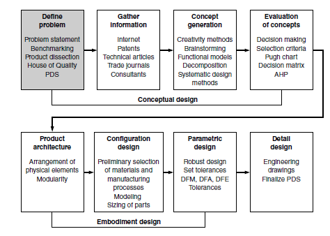
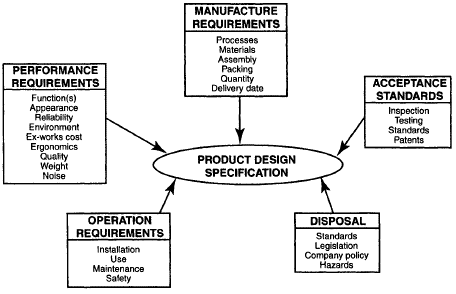

Much research must be carried out and much information gathered to writing a product design specification. This is a continual process but is the essential first step in every design process.
| Requirements Gathering | Business Analyst Training: How To Do Requirements Gathering? |
| Software Requirement Gathering |
Assignment 1 - The Design of a Battery for Hybrid/Electric Cars
Product development begins by determining what the needs are that a product must meet. Problem definition is the most
important of the steps in the PDS (Fig. 1). Understanding any problem thoroughly is crucial to reaching an outstanding
solution. This axiom holds for all kinds of problem solving, whether it be math problems, production problems, or
design problems. In product design the ultimate test of a solution is meeting management's goal in the marketplace,
so it is vital to work hard to understand and provide what it is that the customer wants.

The 407 toll highway was built to allow trucks an alternate route through Toronto. But trucks continue to travel on the 401 instead. Why?
The main headings and criteria listed here and illustrated in the figure below are intended to assist
in the writing of the PDS. They are not to be regarded as an all embracing check-list which
if followed blindly will completely define any PDS. Design projects are by their nature
diverse and substantially different criteria are required from one project to the next.
Nevertheless, the check-list will provide a good foundation upon which you, the student
engineer can build.

What are the performance requirements for a purely software project?
What are the performance requirements for a software/hardware project such as a portable scanner?
Function(s) There may only be a single main function which is to be provided by the product to be designed but this is unusual. More often than not multiple functions can be identified which can be divided into primary and secondary functions. These can vary in nature from mechanical, electrical, optical, thermal, magnetic and acoustic functions to name but a few. The primary function of an engine in a vehicle is to drive the wheels. Secondary functions, such as providing heating inside the vehicle and supporting alternators must also be listed.
How closely does the above relate to "functions" in software?
Loading Loading can be divided into primary and consequential loading. Primary loads are due directly to the required function being provided. Shocks and vibration are generally consequent on the situation in which the product is used. Consequential loading is often very difficult to quantify without empirical data. Specified performance requirements should generally be met comfortably, with some performance to spare.
Aesthetics In some instances this is not important, particularly where the device or structure is not seen. However, for many consumer products or structures a pleasing elegant design is required and colour, shape, form and texture should be specified. All visible aspects must be in accordance with the nature of the product and reflect the corporate image of the company. Any statement in a specification which relates to the way a product will look is inevitably more qualitative than quantitative and should include analogy to qualities found in existing products or natural objects. It is possible to use techniques like golden section, which indicates that for aesthetic beauty any shape should be divided into two thirds and one third.
Well written code requires very little commenting, true or false?
Reliability The required design life, taking due account of routine maintenance, must be specified. This is usually done by specifying the number of operating cycles rather than in units of time. Within this number of cycles an acceptable level (%) of random failures or breakdowns is also specified. Where high levels of life expectancy of components exist and it is known that those components will be employed in a controlled environment, such as in electronic circuits, it is common practice to specify the MTTF (Mean Time To Failure) and the MTBF (Mean Time Between Failures). Where reliability is critical, redundancy, either active or stand-by, should be specified. Reliability is inextricably linked with maintenance, even if a maintenance free product is envisaged.
Can you think of three things you can do to improve the reliability of your code?
Environmental conditions These include the temperature range, humidity range, pressure range, magnetic and chemical environmental conditions to which the product will be exposed. It is important to consider manufacture, store and transport environmental conditions along with the more obvious operating conditions. Also, any physical size restrictions should be specified. This is mainly dictated by the area available to the product when working but is often determined by considering transport and erection. The simplest form of expression for this constraint can be a diagram which forms an integral part of the PDS.
Ex-Works cost (when a seller makes a product available at a designated location and the buyer must cover transport costs) Companies sell products for the maximum price the market will stand which often bears little relation to the cost of producing that product. Hence, the maximum cost specified in the PDS and which the design team must work to, should be the production (ex-works) cost and not the selling price.
Ergonomics (Human factors) If a product is intended for human use then account
must be taken of the characteristics of those users. The design of the product and the tasks
required of the product and the users must reflect their respective capabilities. The
person/product interface, as identified in Fig. 2.6, must be carefully specified. Decisions
are based on those functions which can be carried out by products and will vary as
capabilities of machines increase. The functions carried out by the user are generally to
sense a display, interpret it and make a decision and perform a controlling action.
The environment in which the product is to be operated should be specified carefully.
For example, if noise levels are high then audible signals to which a user must respond may
not be heard. Anthropometrics is the branch of ergonomics which deals with body
measurements and it is normal to specify a user population who fall between the 5th and
95th percentile sizes in any particular respect. Any controls must operate in a logical or
expected manner. Controls should be placed in easy reach of the operator.
Computers see numbers in binary format. Is it a great ergonomics decision to display numbers in binary format to a user?
Quality The quality of the product should meet market requirements and the quality of all components should be consistent. All workmanship must be in accordance with the best commercial practices. Robust design practices should be used where possible. All materials and components shall be new and free from defects.
Is it a good idea to spend a little bit more for something of good quality?
Weight In some industries, such as aerospace, this is the most critical constraint. However, this is not always the case and weight is not always required to be a minimum. Generally in any product involving motion reduced weight is an advantage whereas a product where stability is critical may require weight to be a maximum. Minimum weight generally means less material which leads to reduced production costs and economic advantages.
Noise The upper limits of noise levels which can be emitted by the type of product being designed should be specified. Regulations differ from one country to the next so either the standard which applies in a particular country or the lowest maximum limit amongst those countries targeted for export must be specified. These standards represent the maximum level of noise which is acceptable but lower levels could be specified, for example, to gain competitive advantage.
How would "noise" apply to something like a radio transmitter?
Processes The in-house manufacturing and forming facilities and the criteria under which external resources are sought should be specified. The required reliability of any source of supply and the required quality should be specified. Any special finishing processes which may be required should also be specified.
Materials Materials for both the product and its packaging must be considered and the criteria governing the selection of materials specified without constraining the design team unnecessarily. The many criteria which must be considered are corrosion and wear resistance, flammability, density, hardness, texture, colour, aesthetics and recyclability. There are also many regulations governing the use of hazardous materials which must be included in the specification if relevant.
Assembly The method of assembly should be specified; automatic, manual or assembly line. The rate of feed of components for assembly and time allowed are also important parameters. The specification should also contain statements with regard to the ease of disassembly.
How does one "assemble" software?
Packing and shipment The maximum size and weight for convenient transportation must be specified. Shape can also be important since stacking products together can reduce transport costs substantially. Provision of suitable packing, lifting points and locking or clamping of delicate assemblies should be specified to prevent damage during transport. It may also be important to ensure large products can be disassembled and reassembled easily for transport. The cost of packing and shipment must be added to the ex-works cost to ensure that the product remains competitive wherever it is used.
How do you decide which features your software should have enabled within it?
Quantity The projected quantity of a product which will be sold can have a profound effect on the manufacturing methods and materials used. This must be specified as carefully as possible at the outset. This particularly influences the appropriate levels of toohng, with large quantities justifying expensive tooling.
Delivery date It is important that realistic timescales are set for each stage of the design and production process. This is particularly important when a delivery date has been agreed with a customer and costly penalties for late delivery are built into the contract. Hence, the date by which each stage of the process is to be completed must be specified at the outset. The PDS of a single complex system which is to be designed and produced to an agreed contract will state dates by which the design, manufacture, erection, testing, commissioning and hand over of the fully working installation are to be completed.
What happens if you fall behind on your development schedule assigned to you by your project manager?
What happens if you fall behind on the delivery date of your software to your customer?
Inspection The degree of conformance to standards must be specified in accordance with relevant legislation and the objectives set in the PDS. The degree of conformance required to tolerances as stated within the rest of the specification must also be specified.
Is inspection a reasonable form of code review?
Testing The methods of verification for the product should be specified along with the timescales for carrying out the necessary tests. It is usual on completion that acceptance tests are carried out in the presence of the customer. Tests often include safety interlocks, load capabilities such as speed and power consumption and reliability. Specified means and forms of testing should comply with standards where they exist. The PDS should contain a policy statement on the level of testing, such as every product to be tested or an agreed level of sample testing.
How many levels of testing is there with software?
Standards These may include national, international and company standards. There may also be many other rules, regulations and codes of practice which must be followed.
Are you aware of the ISO certification for software development? See ISO/IEC/IEEE 12207:2017(en): Systems and software engineering - Software life cycle processes.
Patents Following a patent search it is important to state, and subsequently to ensure, that the design must not infringe any patents identified as being relevant. Patents are useful sources of information, particularly when you are beginning a new project with no previous experience in the particular field.
Standards Individual country or international standards for disposal of products and materials must be listed in the PDS. The main implications should be stated. For example, most plastic materials used now must be identified during moulding of the component so that recycling and more importantly, reuse is made possible.
Legislation Any legislation governing the disposal of a product must be specified. Many governments are tightening their legislation with a view to ensuring recycling takes precedence over other methods of disposal, that manufacturers are responsible for accepting products from their last owners and that ease of dismantling and disposal are specified from the start. Also, legislation dictates that all materials used can be easily identified for subsequent recycling or disposal at the end of the life of the product. This must be specified.
Company policy Products which make less impact on the environment than similar products will have an increasing marketing advantage. They also afford a company significant advertising opportunities, which will also improve their competitive position. There are many ways of specifying this and only one is to specify increased life.
Hazards Any potential hazards that may cause difficulties at the end of a product's life should be identified and specified.
We do not dispose of software, however we do try to reuse it. Is object-oriented programming geared towards software reuse?
Installation Where installation of a product is complex it should be specified. This is particularly important when small numbers of large devices are designed. The constraints should include construction, assembly, the time taken, provision of instructions and the skill levels required for installation.
How might one assist a customer in installing software?
Use The cost of ownership of a product, which should be minimized, is, in some cases,
more important than the cost of initial purchase. Factors which influence this, such as the
number of operators required, the skill level required from these operators, the cost of spares
and the maximum tolerable energy consumption should be specified. Continuous, 24 hour
a day, operation or the number of stop/starts in a relevant timescale should be specified. An
alternative to dividing costs into separate categories is to specify a whole-life cost.
The power sources available should also be specified. These may include manual,
gravitational, environmental, electrical, gas, water and internal combustion engines. Each
should be specified exactly. For example, electrical power may be three-phase and
380-420 volts.
Your software is designed and implemented with a specific use-case in mind. Should we write our software with the assumption that it will be used for this specific use-case only?
Maintenance A policy to minimize down time, simplify maintenance, ensure correct reassembly, provide easy access and provide interchangeable parts must be developed at the outset and specified. If there is to be any routine maintenance, service or overhauls the intervals and complexity of these should be specified. In order to simplify the maintenance procedure provision of special purpose tools and disassembly features should be specified if appropriate. The required skill levels of maintenance staff should also be specified. Guards should be easily removed. Levels of lubrication should be specified. An operation and maintenance manual must be supplied. Automatic lubrication should be considered.
Once your software has been deployed at a customer site, is it safe to assume there will no longer be any bugs reported?
Safety There are many standards, a great deal of legislation and codes of practice which refer to all safety aspects of products. These should be listed in the PDS. As an example consider Fig. 2.7, which is extracted from British Standard 3042 and shows test finger IV. This is one of a series of probing devices for checking protection against mechanical, electrical and thermal hazards. Where standards do not exist it is normal to specify fail safe design with no sharp edges and that electrical panel isolators must be interlocked with the door, for example. Where headroom over walkways is less than 2 m suitable warning notices and head shock absorbers should be provided. Guards should be specified to eliminate danger to individuals or equipment.
Compare software written for streaming video/audio with software written to control an airplane. Consider safety, speed of operation, etc...
The content of each PDS will differ from any other but the way in which the information is ordered should always be the same. Assuming the necessary information is available, including the identification of customers and any similar previous specifications, the complete format of the specification should be as follows:
What are the three most important sections mentioned above?